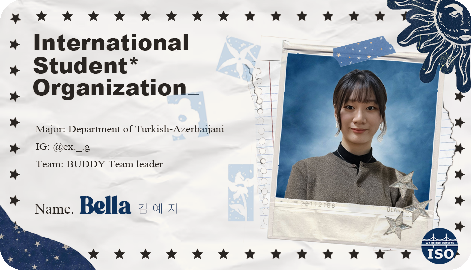
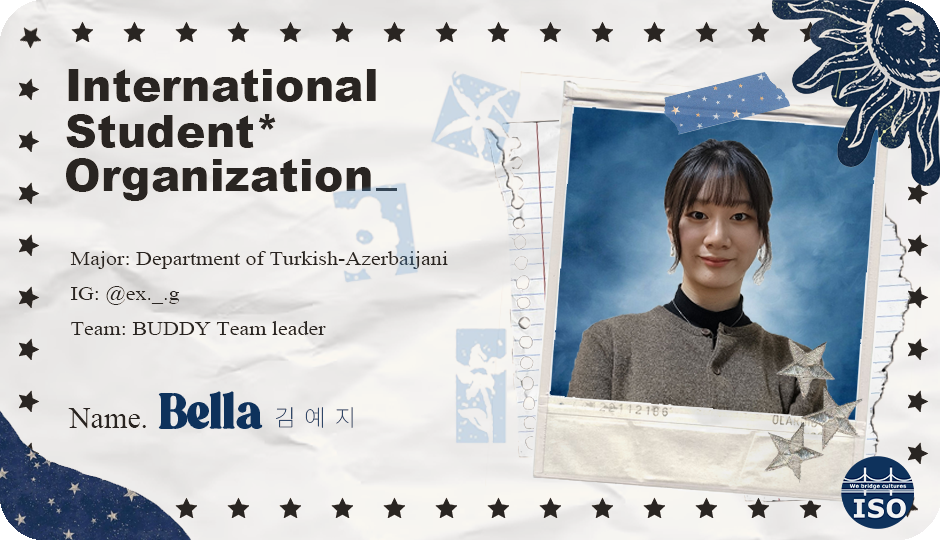

BUDDY Leader
 

Message
Hello Every BUDDY! I'm Yeji Kim, the leader of BUDDY team of this semester.
Hope you guys all enjoy this magnificent BUDDY program! I will always do my best to make your unforgettable memories with your buddy through this program :)
안녕하세요! 이번 ISO BUDDY 팀장을 맡은 김예지입니다. 여러분들이 버디와 함께 잊지 못할 소중한 추억을 쌓으실 수 있도록 BUDDY 팀이 열심히 노력하고 있으니, 모두 즐겨주시면 감사하겠습니다 :)
Fav Movie
I really love to watch Disney movies, and especially my favorite one is "Moana"!
I cannot help loving this adorable baby~
디즈니 영화 보는 걸 좋아하는데 그 중 "모아나"를 가장 좋아해요.
모아나가 바다와 처음으로 소통하는 장면이 정말 예쁜 것 같아요!
Hobby
Diary
I started writing a diary when I was 16, It's already been been 8 years!
I enjoy writing because the more I write, the more I learn about myself and can get fun from reflecting on each day.
I like recording my day through videos or pictures too.
Guitar
I started playing acoustic guitar after watching the movie Sing Street!
I feel really happy when I learn how to play the accompaniment of the music I like.
Music
I like both listening to and singing music.
My Playlist!
일기
중학교 3학년 때부터 일기를 쓰기 시작했는데 벌써 8년째에요!
글 쓰는 걸 좋아하기도 하고, 일기를 쓸수록 점점 저에 대해 알게 되고 매일을 성찰하게 되는 것에서 재미를 느껴요.
영상이나 그림을 통해 하루를 기록하는 걸 좋아해요.
기타
영화 Sing Street를 보고 통기타를 치기 시작했어요!
원하는 음악의 반주를 직접 연주할 때 정말 행복해요.
음악
음악은 듣는 것도 부르는 것도 모두 좋아해요.
추천곡은!


Hi!
Hobby
But it's nothing compared to how far we've come
Walking down this boulevard
When the darkest times come right before the sun
We're almost there baby one more step
Woah, left, right, left, right, left